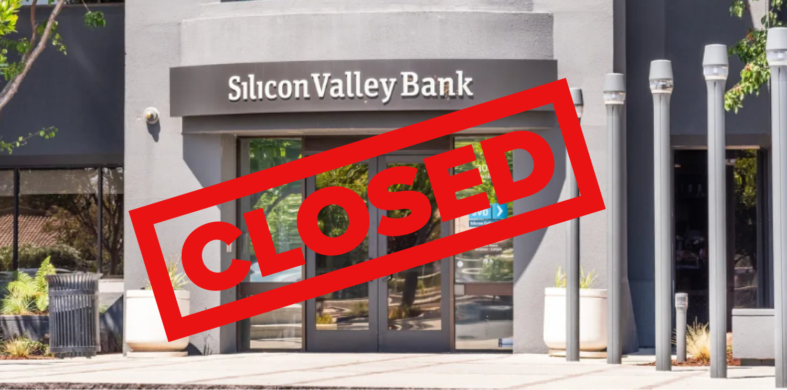
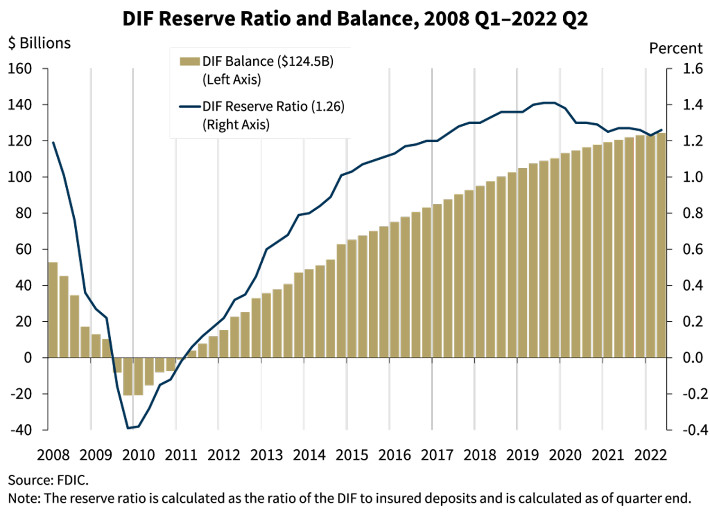
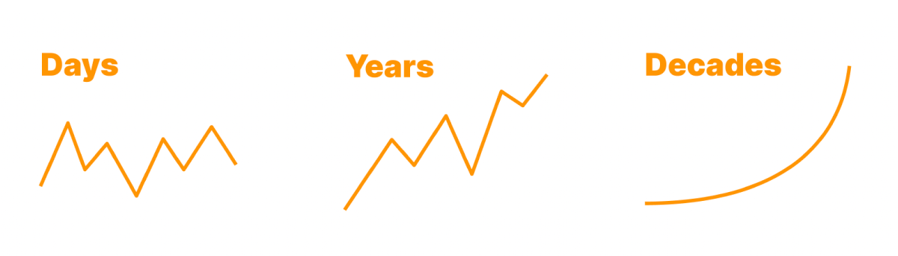

BITCOIN DOESN'T HAVE BANK RUNS
BUT YOUR BANK MIGHT
WHAT IS A BANK RUN?
A bank run happens when too many people try to withdraw their money from the bank at the same time.
If banks don't have enough money available to match withdrawals, they can collapse entirely when a bank run happens.
HOW DO BANK RUNS HAPPEN?
Our banking system is 'fractional reserve' which means the banks don't just keep your money in a vault and wait for you to spend it or withdraw it.
Instead, your bank takes your money and lends it out or invests it. This can lock your money up for long periods of time, even though the bank promises you the ability to withdraw your money any time.
So what happens if you try to withdraw your money after the bank has already lent it out or invested it?
It's not a problem if you're the only one trying to withdraw. The bank will just take someone else's money and give it to you instead. But what happens when too many people try to withdraw at the same time?

Lots of people in the USA found out when there was a run on Silicon Valley Bank in March of 2023.
The bank had invested their customers' money in government bonds which were locked for up to 30 years. Even worse, the value of those bonds had fallen dramatically recently, so Silicon Valley Bank couldn't just sell the bonds to get the money of their depositors. They were insolvent. They didn't have enough money to match the withdrawals of their depositors.
As more people found out, the problem only got worse. More withdrawal requests came in, but many weren't processed. Thousands of businesses realized they wouldn't be able to pay their employees due to the bank failing.
The FDIC stepped in and agreed to make depositors whole. Problem solved? Not exactly...
DOES FDIC INSURANCE PROTECT MY MONEY?
FDIC insurance is designed to protect bank depositors in the event that a bank fails. Deposits are insured up to $250,000 per depositor. Sounds great, right?
Not exactly. If a bank fails, where does the FDIC get the money from? They have an insurance fund with 125 billion dollars in it.
That sounds like a lot of money until you compare it to the amount of deposits they insure: almost 10 trillion or 10,000 billion dollars.

The FDIC even shows on their website that they only have enough money in their insurance fund to cover a little more than 1% of deposits.
In the event of a bank failure that exceeded the FDIC insurance fund, it is likely (but not guaranteed) that the US government would print money to make depositors whole.
But printing money causes inflation, so it's not a great solution.
ARE THERE BANKS THAT DON'T USE FRACTIONAL RESERVE?
Some banks have tried to be 'safe banks' which don't lend out or invest depositor funds.
Even though these safe banks would have zero risk of bank runs, their applications have been denied by the Federal Reserve. This means they can't legally operate as banks.
Because they've been blocked from operating, there are no banks today that don't use fractional reserve.
Fortunately, there is a way to opt out of the fractional reserve system by being your own bank. No, we're not talking about stuffing cash under your mattress.
Saving in cash is still vulnerable to inflation.
WHAT IS BITCOIN?
Bitcoin is two things: a digital money and a payment network. You can send Bitcoin (the digital money) directly to other people using the Bitcoin network (the payment network).
Bitcoin is a radically new way to store and transact value. Unlike normal financial networks, the Bitcoin network is able to operate without central authorities or trusted administrators. That makes Bitcoin the first ever open and borderless money.
Bitcoin is digital money that gives you complete ownership over your wealth. For the first time in human history everyone can own an asset that is truly scarce, doesn't require permission to be used, and can't be confiscated when stored properly.
Bitcoin can be sent anywhere in the world, quickly and cheaply. It has no need for a 3rd party transmitter, like a bank.
Bitcoin allows anyone to store their wealth safely and securely without worrying about the government stealing it or inflating away its value through money printing.
Governments everywhere can print more paper money, but no one can print more bitcoin.
You can easily self-custody your Bitcoin to take full control of it, giving you full access to the power of Bitcoin.
If you can download an app, you can self-custody Bitcoin and store your wealth without relying on anyone else.
Bitcoin is better money.
CAN BITCOIN PROTECT ME FROM BANK RUNS?
Yes, Bitcoin is a full reserve financial system.
Bank runs are impossible in Bitcoin as long as you withdraw your Bitcoin to your own wallet. Don't leave your bitcoin on an exchange or in a wrapper like a Bitcoin ETF.
Check out our simple Bitcoin Wallet Guide to learn how to withdraw to your own wallet.
With Bitcoin, you can finally be in control of your money.
I HEARD BITCOIN IS VOLATILE. IS THAT SAFE?
In the short term, the exchange rate of Bitcoin tends to fluctuate. This is called volatility.
But the volatility you see on a day-to-day basis 'disappears' in the long term.

Bitcoin continues to get less and less volatile over time. As more people use Bitcoin as a long term savings account, the more its value stabilizes.
Many people choose to store value in Bitcoin for many years as a safe way to minimize the risk of volatility and protect their purchasing power over time.
In some countries, such as Venezuela, Sudan, Lebanon, Syria, Argentina, Turkey, Brazil, and so many others, the value of the local currency inflates away so quickly that Bitcoin is seen as the more stable way to save money.
I CAN'T AFFORD A WHOLE BITCOIN

You don’t have to own a whole bitcoin. Most people just own sats. Sats are fractions of a bitcoin. For example, if 1 whole bitcoin is $100,000 then $1 buys you 1,000 sats!
HAS BITCOIN EVER BEEN HACKED?
You may have heard about a 'Bitcoin hack' online or on the news. Most people read these articles and believe the Bitcoin network has been hacked. However, the Bitcoin network has never been hacked.
What's the Bitcoin network? Well, think of the Bitcoin network as train tracks. The trains riding on the train tracks of the Bitcoin network are Bitcoin transactions.
When you read about a Bitcoin hack in the news, you're reading about a custodian (like FTX) getting hacked or going bankrupt.
Custodians are companies that hold your bitcoin for you. However, that comes with a risk: losing your bitcoin when the company mismanages it, steals it, or goes out of business.
This happened most recently with FTX.
Everyone who trusted FTX with their bitcoin lost their bitcoin. Everyone who held their bitcoin in self-custody was completely unaffected by FTX. That is the power of bitcoin in self-custody: true control of your money.
Instead of leaving your bitcoin on an exchange or in a wrapper like an ETF, hold it in your own wallet for all the freedom benefits.
When you self-custody your bitcoin, your money is protected by the Bitcoin network. It's the most secure financial network in the world.
In self-custody, Sam from FTX can't steal your bitcoin from you.
The government can't print more bitcoin and cause inflation.
Bitcoin in self-custody is your money, thanks to the power of the Bitcoin network.
WHY DOES BITCOIN USE ENERGY?
Bitcoin uses energy to secure the network and protect your money.
Bitcoin uses a significant amount of energy, and this is a great thing for many reasons.